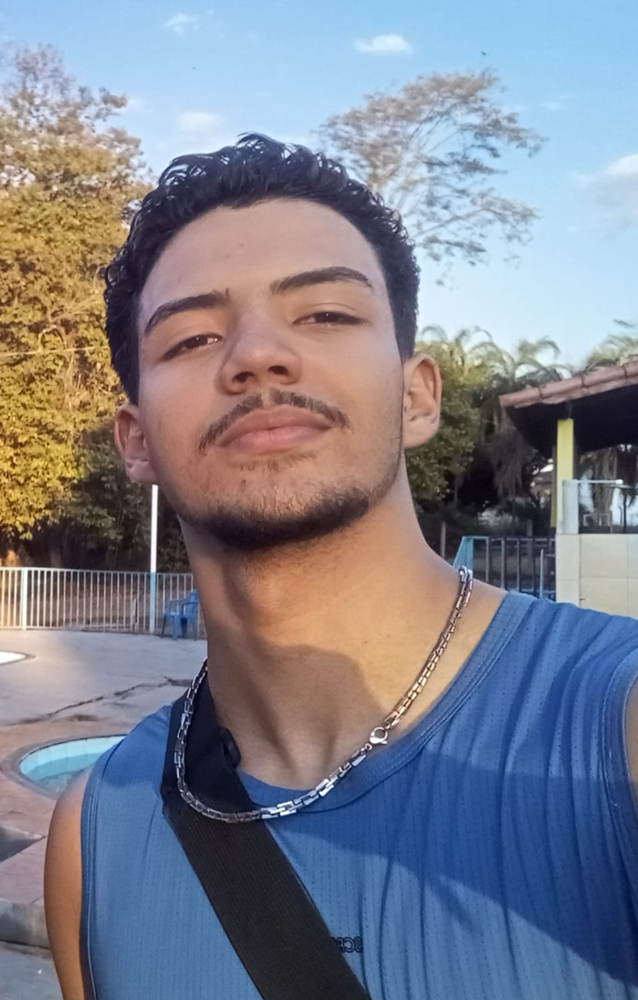

Ezequiel Oliveira Rodrigues
18 anos | Técnico em Informática
Me chamo Ezequiel Oliveira Rodrigues e tenho 18 anos. Sou uma pessoa apaixonada por tecnologia e sempre em busca de novos desafios.
💼 Carreira Profissional
Atualmente trabalho na Techify, onde atuo como técnico em informática. É uma experiência incrível poder aplicar meus conhecimentos no dia a dia.
🏀 Esportes
Gosto muito de esportes, principalmente basquete. É uma paixão que me acompanha e me ajuda a manter o equilíbrio entre corpo e mente.
🎬 Cinema
Adoro filmes de ficção científica. Gosto de explorar universos alternativos e refletir sobre o futuro da humanidade através das histórias.
🎵 Música
Sou apaixonado por música e escuto todos os dias. A música faz parte da minha rotina e me acompanha em todos os momentos.
📺 Séries
Gosto muito de séries e minha favorita é How I Met Your Mother. Adoro o humor inteligente e as lições de vida que a série traz.
🧠 Filosofia
Tenho grande interesse por filosofia. Gosto de questionar, refletir e buscar entender o sentido das coisas e da existência humana.
💭 Psicologia
A psicologia me fascina. Entender o comportamento humano e os processos mentais é algo que considero essencial para o autoconhecimento.
🎯 Desafios
Gosto de desafios e sempre busco sair da zona de conforto. Acredito que é através dos desafios que crescemos e evoluímos.
❤️ Filosofia de Vida
Vivo com paixão em tudo que faço. Acredito que quando fazemos as coisas com amor e dedicação, os resultados são sempre melhores.